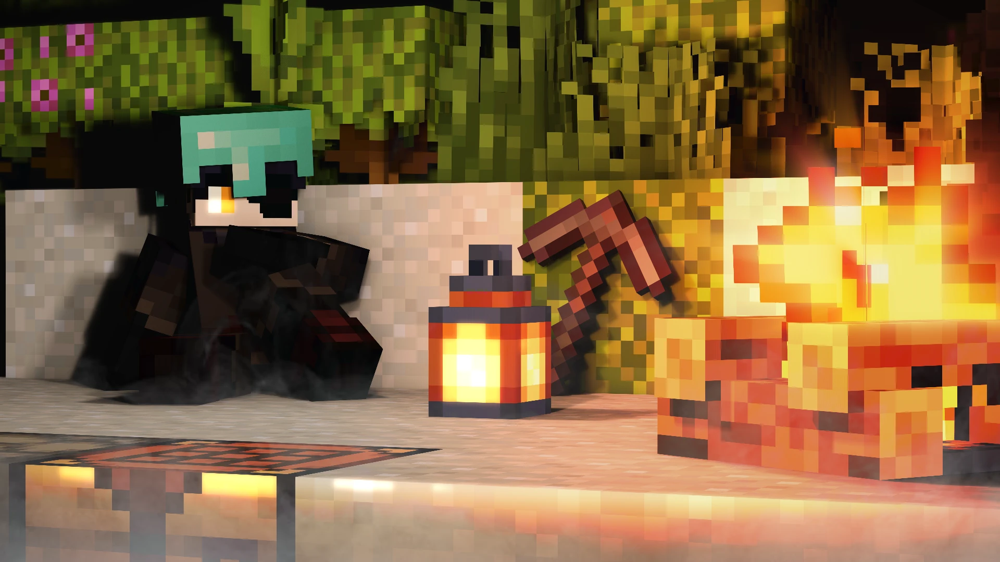

Цифровые миры01 / 08MINIMATE / MINE-IMATORИстории в каждом блоке.
Рендеры и анимации
Minimate
Свет, атмосфера и знакомые миры.
Мои работы в Minecraft — в одной галерее.
Я делаю приложения, собираю игры
и ставлю свет в Minecraft.
Здесь можно заглянуть внутрь.
У каждого — своя задача.
И своя история появления.
Мне 19. Учусь на разработчика ПО и делаю вещи, которыми хочется пользоваться самому.
Не привязываюсь к одному стеку. Разбираюсь в задаче, подбираю инструмент и переделываю, пока результат меня не устроит.
Отдаю рутину инструментам, а логику, архитектуру и проверку оставляю себе. Важно понимать, что собираешь.
Удобный интерфейс — часть работающего продукта. Он должен помогать человеку, а не заставлять разбираться в кнопках.
Не нужно знать всё наизусть. Нужно понимать принципы и быть готовым разобраться в незнакомом.
Экспериментирую, проверяю и исправляю. Хочется выпускать то, что можно открыть и попробовать, а не только обсуждать.
Вопрос, предложение или просто «привет» —
быстрее всего отвечу в Telegram. Почту не читаю.